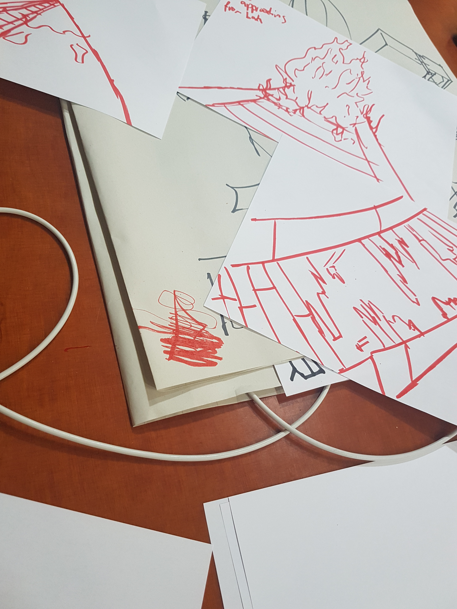
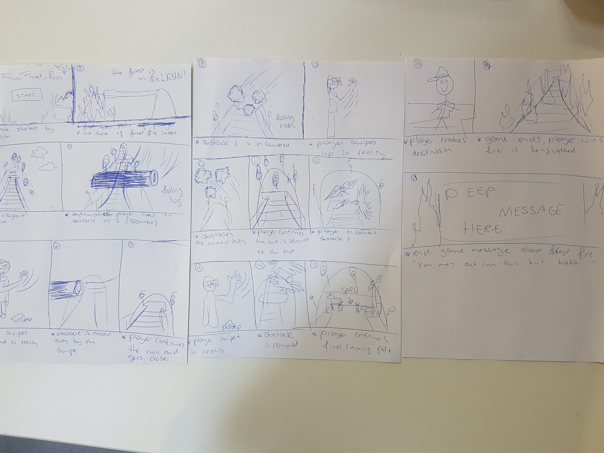
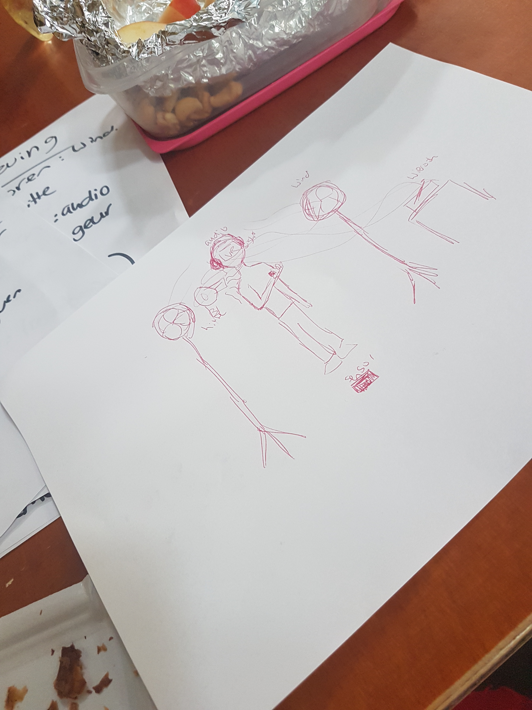
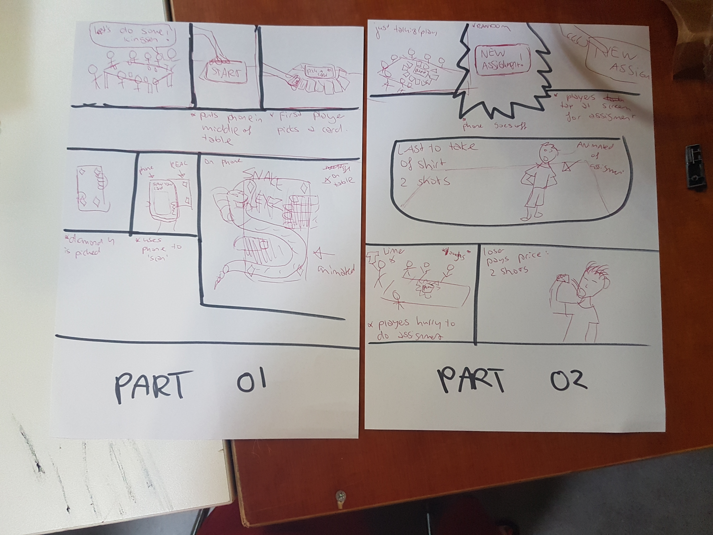
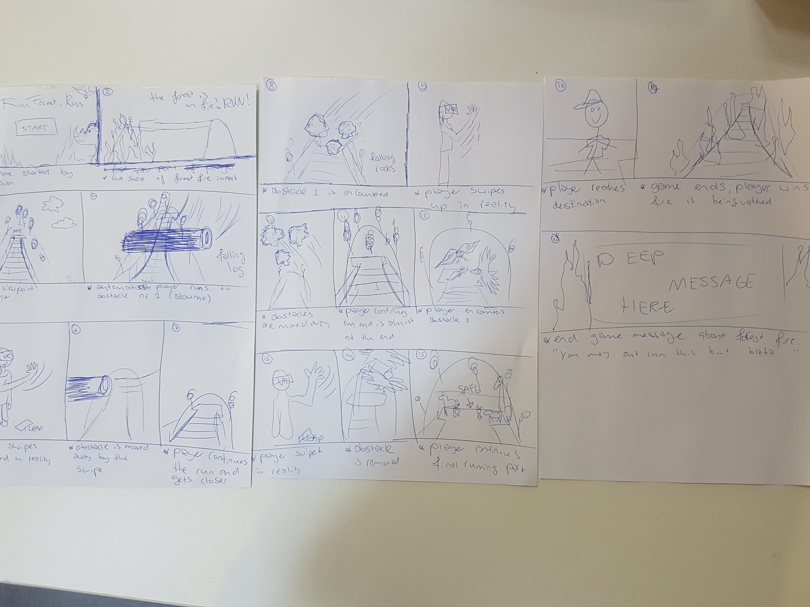
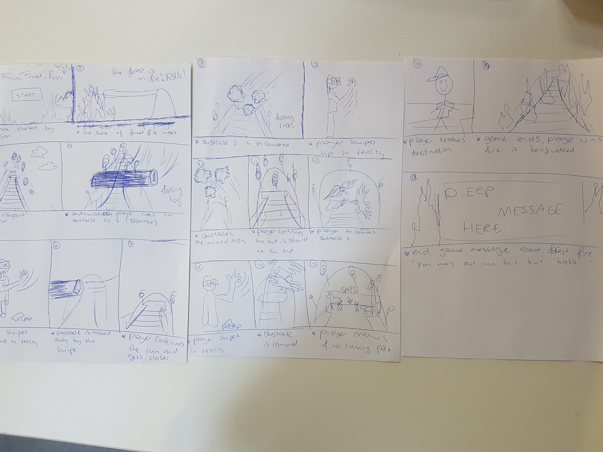
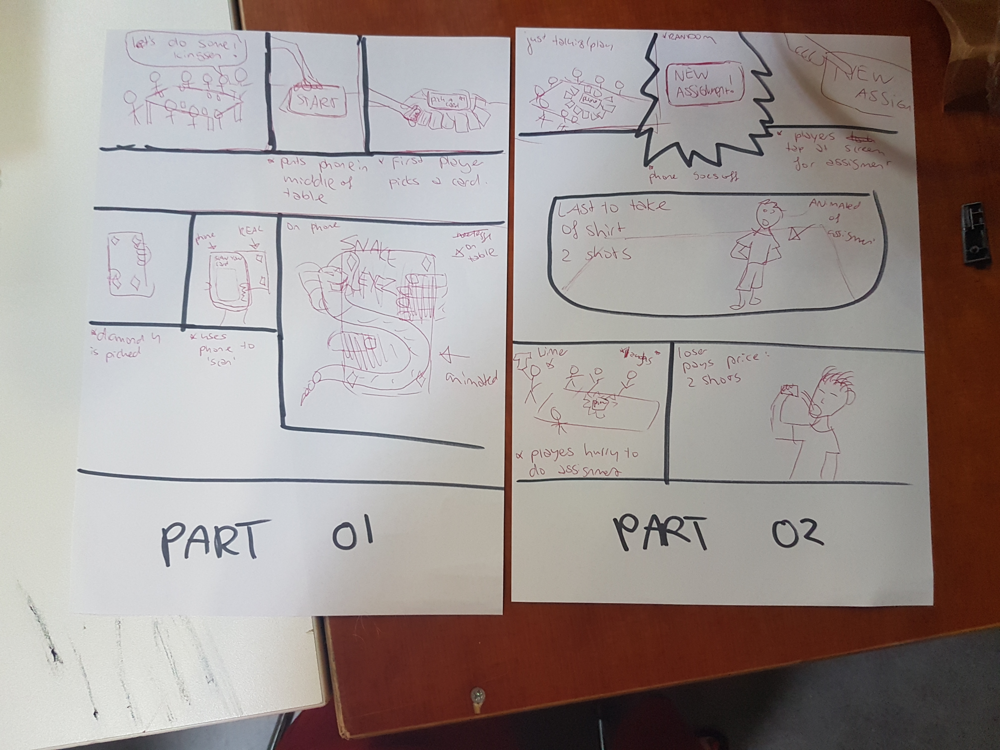
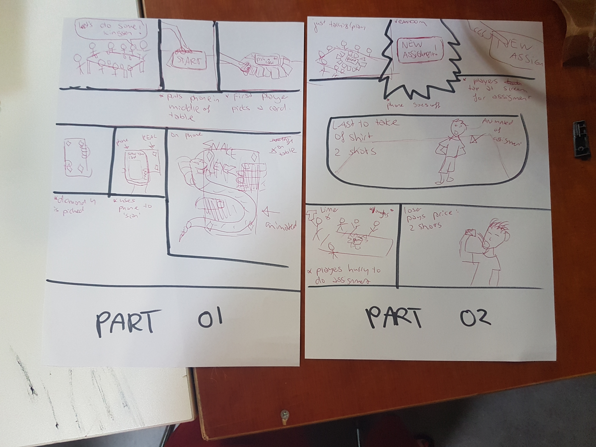

Vandaag begonnen we de dag met een briefing van Chris, vervolgens mochten we gaan kijken welk onderwerp we hadden gekregen en wie je teamgenoten waren. Mijn onderwerp was VR, deze wilde ik ook hebben dus dat vond ik erg tof! We zijn meteen begonnen met het verzamelen van ideeen omrent het VR/AR. Hieruit kwamen wel wat concepten maar niets wat we echt sterk genoeg vonden. Uiteindelijk na nog wat brainstorm sessies later kwamen we op het idee om een gebeurtenis, de watersnoodramp, na te gaan bootsen door middel van een VR bril.
Na feedback te hebben gevraagd bleek dat het concept nog aan iets ontbrak, er werd besloten om de omgeving heel erg bij de VR experience te laten betrekken. Na het hierover duidelijk te hebben gehad zijn hier ook schetsen voor gemaakt en was er een duidelijk beeld bij iedereen hoe dit in zijn werk zou gaan. De persoon loopt in VR van berg naar berg over een gammelend met obstakels bestrooide brug, in werkelijkheid loopt hij over tafels. De gebruiker zal wind voelen, geur en zelfs de hitte van het vuur achter zich. Morgen gaan we verder om te kijken hoe dit concept echt uitgevoerd zal worden en zullen ook de taken worden verdeeld.

Dag 2
Vandaag begon de dag niet zo goed, er was een staking van het ov en iedereen had veel moeite om bij de Factory te komen. Er is vandaag wat meer onderzoek gedaan naar Unity en de eventuele assets uit de store die we zouden kunnen gebruiken. Ook is er nagedacht over hoe we de zintuigen gaan beinvloeden van uit de realiteit. We willen o.a wind creeeren door een ventilator te gaan gebruiken. Daarnaast is de plek waar onze 'survivaltocht' plaats zal vinden gemeten zodat dit gebruikt kan worden in Unity. Daarnaast is er een poster gemaakt als sfeerbeeld. We zijn gaan kijken naar hoe we de 'brug' kunnen gaan beinvloeden. Wel kwamen we een groot probleem tegen, er kon geen computer worden gevonden die de VR bril aankon. Dit kregen we helaas pas aan het einde van de dag te horen, dit zal dus een probleem voor morgen worden. Deze foto's zijn door Noa gemaakt.
Dag 3
Vandaag waren we helaas weer met minder man, we hebben met zijn drieen besloten om het concept welke gebaseerd was op het gebruiken van de HTC Vive omgegooid. We konden hier geen computer voor regelenen dus moest het anders. Allereerst is er gekeken naar de 'cartbox' VR bril die school ons bracht, het beeld hiervan was niet erg scherp en zag er helaas wat 'oud' uit. Ikzelf heb een Samsung Gear VR, deze zal ik morgen meenemen om hiermee te gaan testen. Ook is uiteindelijk besloten om de Oculus BK2 te reserveren om morgen mee verder te werken als de laptop weer aanwezig is die het hierop deed. Aangezien hier niet mee verder kon worden gegaan vandaag is er verder gewerkt met Unity om alvast een basis te krijgen. Het concept is opnieuw uitgedacht voor deze bril waardoor de omstandigheden veranderde. Ook is er een storyboard getekent zodat het duidelijk is hoe de verhaallijn zal moeten gaan lopen. Morgen wordt dus vooral een dag van testen, gesprekken hebben en taken verdelen.

Dag 4
Vandaag lukte het helaas niet om de VR goed te testen, onze 'programmeur' was helaas ziek dus moest er veel worden uitgezocht om zelf iets te kunnen doen. Er is geprobeerd om verder te werken met de VR DK2 en om deze te gaan combineren met de LEAP in plaats van de camera die hier bij hoorde aangezien we deze maar niet aan de praat kregen. Uiteindelijk deed de VR bril het samen met de LEAP! Vervolgens is er nog een keer naar het concept gekeken en is er een back-up plan gemaakt voor als Unity toch niet met de oudere VR bril kan werken. Er zal dan een Samsung Gear VR bril worden gebruikt, ook willen we toch nog een keer naar AR gaan kijken. We zijn dus nog niet helemaal zeker over ons bedachte concept. Er is wel gekeken naar hoe we de omgeving meer kunnen gebruiker door middel van o.a ventilatoren, wierook en audio. Er is vandaag vooral veel uitgezocht over hoe de bril werkend kon worden gemaakt en hoe LEAP hierop kon worden gecombineerd. Morgen zullen we dit moeten gaan uitzoeken met Unity, dit lukte voor vandaag nog niet omdat de versie dus te nieuw was.

Dag 5
Vandaag heb ik de Samsung Gear VR meegenomen. Na een gesprek met Joel bleek al snel dat de Rift Dk2 geen optie meer was aangezien hij vertelde dat er vorig jaar erg veel problemen mee waren en dat hij vol met bugs zat. We zijn toen verder gaan kijken naar de Samsung VR maar hier zaten ook een aantal nadelen aan zoals het overheaten na een halfuur en dat dit niet zo gemakkelijk met LEAP en Unity werkte. Er is toen besloten om het hele concept om te gooien. We zijn overgestapt naar AR en willen het spel Kingszen gaan verbeteren. Dit is een drankspel met veel regels, welke iedereen altijd vergeet. Als er een kaart gescand wordt zal er op het mobiele scherm getoond worden wat deze kaart inhoud. Wel wordt dit met een animatie gedaan en dus niet met tekst. Zo is er bij 'snake eyes' een slang op de kaart gezien. Uiteindelijk waren we het allemaal eens over dit concept in de basis. Als er ruimte voor blijkt te zijn willen we hier graag een heel interactief spel met de telefoon als gamemaster van maken.
Voor nu focussen we ons vooral op het AR gedeelte. We hebben onderzoek gedaan naar hoe dit moet en welke technologie en programma's we nodig hebben. Het blijkt dat we zowel Unity als Blender nodig gaan hebben. Blender kenden we allemaal niet maar hierin worden de assets gemaakt, hier zullen we dus allemaal tutorials van moeten gaan kijken. Ook was er wat onrust in onze groep en is alles uitgesproken en hopelijk opgelost en kunnen we maandag met een nieuwe goede start beginnen.Er is iniedergeval al een storyboard en er zijn regels voor het spel opgesteld per kaart. Ook zijn we begonnen met schetsen maken voor wat er in AR getoond zal worden per kaart. In het weekend gaan we ook allemaal nog even verder om iniedergeval wat verstand van Blender te krijgen.

Dag 6
Vandaag zijn we begonnen met goede communicatie. We hebben een duidelijke rolverdeling gemaakt en een plan van aanpak voor vandaag. Noa en ik zijn samen aan de schetsen voor de regels verder gegaan en Mathijs en Eimantas zijn gaan zoeken naar assets voor de eerste paar regels. Hier zijn Noa en ik uiteindelijk mee gaan helpen. Sommige assets konden niet premade gevonden worden en moesten zelf gemaakt worden in Blender. Hiervoor hebben we allemaal tutorials gekeken zodat we een idee kregen hoe we met dit programma moesten werken. Dit bleek een erg ingewikkeld programma te zijn en niet gemakkelijk om zo even een asset in elkaar mee te zetten. Uiteindelijk zijn we de dag geindigd met het vinden van bijna alle assets, alleen die van de kroon ontbreekt nog. Wel moeten de objecten nog bij elkaar gezet worden met tekst en aan de kaarten gelinkt worden. De kaarten zijn vandaag ook gehaald.
Dag 7
Vandaag ontbrak helaas weer een persoon uit onze groep, we hadden hem wel echt nodig omdat onze Unity Assets op zijn laptop stonden. Dit schopte onze planning aardig in de war waardoor we een nieuw plan van aanpak moesten opstellen. We hebben een duidelijke taakverdeling gemaakt. Matthijs zou werken aan het linken van de online AR plek met de kaarten in de realiteit zodat alle kaarten het zouden gaan doen. Noa en ik zijn aan de slag gegaan met de informatie qua tekst welke bij de kaarten kwam te staan. Hierna zijn we op zoek gegaan naar een manier waarop deze weergegeven kon worden naast het in AR weergegeven beeld. Uiteindelijk kwamen we erop dat dit een static element in Unity kon worden. Hoe deze zal telkens zal veranderen qua tekst als het een ander soort kaart is, dat is nog niet helemaal duidelijk.
VVervolgens is Noa verder aan de slag gegaan in Blender om tekst toe te voegen aan assets, ik ben zelf assets op gaan zoeken om deze vervolgens naar hem te sturen. Uiteindelijk zijn nu alle assets gevonden/gemaakt, er moet alleen nog tekst en kleur aan toegevoegd worden. Verder heb ik gekeken naar hoe de objecten geanimeerd kunnen worden in AR, na wat tutorials gekeken te hebben is dit uiteindelijk toch nog aan het einde van deze dag gelukt! Ook hebben we nagedacht over de opstelling van de expo, hiervoor hebben we nu een Beamer geregeld en XXL speelkaarten gekocht.
Dag 8
Vandaag bestond ons team weer uit drie man, deze keer hebben we een docent hierom aangesproken. Vrij snel gingen we te werk met een aangepast plan van aanpak. Mathijs maakt de database van kaarten, deze moeten allemaal gefotografeerd worden en middels Photoshop uitgesneden en in Unity worden gezet. Noa en ik zijn bezig geweest met het maken van de objecten in combinatie met tekst. Deze zijn aan het eind van de dag allemaal af. Ook staan ze nu allemaal in de database van Mathijs. Daarnaast is er een code geschreven om de objecten rond te laten draaien, morgen willen we nog kijken naar een soort 'levitate' animatie. Ook gaven de rode kaarten wat problemen, de webcam pakte deze minder goed en soms zelfs niet. Ook bij sommige klaveren kaarten haalde hij de 6 en de 7 bijvoorbeeld door elkaar. We willen dit oplossen door het contrast groter te maken. Rondom de rode figuren hebben we nu zwarte lijnen gemaakt en rondom de zwarte gaan wij rode lijnen maken. We hebben dit getest en hierdoor werken de gemaakte kaarten echt perfect! We zijn dus richting het einde en het gaat eindelijk de goede kant op! We hebben er zin in.
Dag 9
Vandaag was de database zo goed als klaar. Onze XXL kaarten kwamen ook vandaag binnen. Helaas ging er vandaag ook erg veel fout. Ik heb de dag vooral besteed met het zoeken naar een code waardoor ik de rotate animation in unity kon combineren met een leviation. Helaas is dit vandaag niet gelukt. Eimantes ging aan de slag met de UI overlay waarin de regels te voorschijn zouden komen. Dit lukte ook allemaal. Helaas ging het fout toen hij dit doorstuurde naar de database van Mathijs. Niet alleen deed de UI overlay het niet maar de gehele database deed het niet meer. We hadden ineens letterlijk niks meer.
VGelukkig heb ik zelf de objecten bewaard dus deze zijn er nog wel maar de database zal helemaal opnieuw moeten worden gemaakt. Terwijl Mathijs en Eimantes hiermee bezig waren heeft de rest zich vooral gefocust op het opbouwen van ons decor voor de expo. Dit was ook nogal een gedoe omdat we een camera boven de tafels nodig hadden en een beamer. We hebben de muur wit geverfd zodat de beamer het hier beter op deed en we hebben een constructie gemaakt voor de camera. Wel hebben we beter licht nodig, dit zal mee moeten genomen van thuis. Er is best veel stress op dit moment omdat we dachten dat we alles voor elkaar hadden en nu ineens hebben we helemaal niks meer. Er wordt s'avonds nog doorgegaan en morgenochtend. Hopelijk komt het nog goed.
Dag 10
Gisteren begon super goed en eindigde totaal andersom. Helaas begon deze ochtend precies zo waar hij gisteren was gestopt. Eimantas was doorgegaan s'avonds om de code te fixen zodat deze het weer deed. Het laatste bericht van hem was om 02:00 s'nachts en de ochtend hierna was hij niet aanwezig. Matthijs deed zijn best met wat er op de Drive stond maar kreeg het niet voor elkaar. Doordat er verder geen contact met Eimantas kwam en onze vorige ervaringen schoten wij allemaal compleet in de stress. Matthijs zei dat hij zijn best ging doen om de database compleet opnieuw te maken, dit moest volgens hem wel te doen zijn in de tijd die wij nog hadden. Hier kon hij helaas verder niet bij geholpen worden. Ik ben toen de XXL kaarten gaan tekenen met contrast zodat de camera deze beter zou pakken, Noa en Paco hebben deze vervolgens gefotografeerd zodat ze meteen in de database konden als deze werkend was. Ook hebben we posters gemaakt om onze expositie op te leuken.
Daarnaast had ik shotglazen en een groot glas voor in het midden meegenomen om echt de ervaring van Kingszen te geven. Matthijs en ik hadden allebei ook een lamp meegenomen, wij zijn toen gaan testen met de lamp. Ook zijn we nog een keer aan de slag gegaan met de witte muur en de beamer, ik heb deze nog een stuk geverfd zodat de beamer omhoog kon zodat ook aan de achterkant van de tafel ruimte was voor mensen om te gaan zitten. De deadline kwam langzaam dichterbij en er werkte om 15:00 helaas nog steeds niks ookal deed Matthijs erg zijn best. Gelukkig kwam toen uiteindelijk Eimantas nog aan die het net op tijd voor ons kon oplossen. Net iets over de deadline van de expositie, maar alles deed het! Toch nog een goed einde en een leuke expositie.
Product
Ons product voor de Labweken is 'AR u KING?'. Dit product is gebaseerd op het spel Kingsen, een drankspel voor jongeren. Dit spel bestaat uit een groot glas drank in het midden van de tafel met hierom heen speelkaarten. Er moet telkens een kaart getrokken worden en bij elke kaart horen bepaalde regels zoals 'Shot links' of 'Juffen'. Bij elke groep jongeren zijn de regels anders of vallen deze precies op een andere kaart. Het is dan ook vrij normaal dat er altijd 1 iemand met een papiertje in de groep zit waar alle regels op staan geschreven, erg onhandig en ook kwetsbaar. Ons concept is wel gebaseerd op het Kingsen wat al bestaat maar is bedoeld als verrijking hiervan. Niet alleen wordt het papieren regelvel overbodig maar het spel wordt interactiever en het wordt ook makkelijker speelbaar voor mensen die het spel niet kennen, vooral internationale personen.
De set up van het spel is nog steeds hetzelfde bij ons concept, de kaarten liggen rondom het grote glas met drank. Ook wordt er nog steeds een kaart per speler getrokken. Wat er nu anders is, is dat de kaart gescant wordt door een Smartphone. Vervolgens wordt er op het scherm een object op de kaart getoond waardoor er duidelijk is welke regel bij deze kaart hoort. Ook kan er boven in het scherm op 'Rules' worden gedrukt, hierdoor wordt de regel die bij de kaart wordt simpel uitgelegd.
Alle objecten die op de kaarten te zien zijn, zijn in Blender gemaakt. Hierdoor zijn alle objecten 3D en kon er goed meegewerkt worden in Unity. In Unity zijn ook de animaties aan de kaarten toegevoegd en is de database voor de kaarten ontwikkeld. Dankzij Vuforia konden deze objecten gekoppeld worden aan de kaarten. Alle kaarten hebben een andere regel, het is dus van belang dat er goed onderscheid gemaakt wordt tussen de kaarten. Vervolgens is er ook in Unity een UI overlay aangemaakt met behulp van code om de regels tijdens het scannen van het object statisch weer te geven. Hiervoor is ook de interactie van de vingerafdruk nodig, dit is ook met code gedaan in Unity.
Voor de expositie hebben wij ook een camera boven het gespeelde spel gehangen en deze gekoppelde aan een beamer die op het scherm projecteerde. Op deze manier konden alle toeschouwers ook meegenieten van het AR beeld dat werd geprojecteerd op de kaarten als deze werden gescant. Hieronder is onze aftermovie te zien.
Reflectie
Tijdens de start van de HCI weken was ik super enthiousiast, ik was vooral erg benieuwd of ik het onderwerp VR zou krijgen. Toen dit wel het geval was had ik er meteen erg veel zin in! Ik kwam er al meteen achter dat ik het goed kon vinden met Noa en Matthijs, iets met dezelfde droge sarcastische humor. Wel ging het vanaf dag 1 fout in de groep qua aanwezigheid. Paco liet weten dat hij vaak naar het ziekenhuis moest voor zijn hand, begrijpelijk natuurlijk maar wel jammer voor ons. Ook was Eimantas de eerste dag niet aanwezig, ik had hier meteen al een slecht voorgevoel over. Dit zorgde dus een beetje voor een domper over het hele project, we waren de eerste dag al met maar drie man. We hebben ons hier wel goed over heen gezet vind ik al heeft dit wel voor veel gedoe onderling geleid. Een goede samenwerking was het dus totaal niet, zeker de eerste week niet. Wel vind ik dat we dit goed hebben proberen op te lossen door afspraken met elkaar te maken. Ik heb eigenlijk nooit problemen gehad in een groep, dus dit was voor mij ook de eerste keer. Ik vind dat ik dus zeker wel iets geleerd heb op het gebied van samenwerking. Soms kom je nu ook eenmaal in aanrakening met problemen in de samenwerking en dan moeten ze worden opgelost. De tweede week ging gelukkig een stuk beter en toen hebben we ook wel lol kunnen hebben met elkaar.
De eerste week hebben we heel erg gestruggeld en waren we eigenlijk allemaal wel negatief over het project. Er ging een hoop fout, niet alleen qua aanwezigheid van de groep maar ook qua apparaten. We hadden een heel tof concept voor VR maar waren te laat met de VR bril. Toen hadden we er uiteindelijk toch nog een geregeld en kwamen we erachter dat niemand een computer had die dit aankon. Onze voorbereiding had ervoor kunnen zorgen dat dit allemaal niet was gebeurd, we hebben hier te makkelijk over nagedacht. Dit is iets wat ik voor de volgende keer zeker meeneem. Bedenk voordat je aan een concept begint over welke technologie je beschikt anders kan het voorkomen dat je een concept verzint voor niets.
De eerste week bestond voor ons groepje dus vooral uit concepten bedenken en technologie uitproberen. We hadden hier niet specifieke taken in, wat achteraf gezien misschien wel slim had geweest. De tweede week hebben we dit dus ook meteen anders aangepakt. Ik hou zelf heel erg van een planning en georganiseerd zijn, ik vond het dus best moeilijk om met deze chaos om te gaan. Ik voelde me wel een beetje het 'jufje' maar het werkte wel een stuk beter. We besloten om duidelijke communicatie te hebben met elkaar. S'ochtends bespraken we wat er gedaan moest worden en wie wat ging doen. Aan het eind van de dag hielden we een debriefing, zo ging het allemaal veel beter qua samenwerking. De tweede week heb ik mij vooral gericht op het leren van Blender samen met Noa, zodat wij de objecten konden maken. Dit was een erg lastig programma en daarom ook een echte uitdaging. Het was iets totaal anders dan wat ik kende zoals Adobe Indesign. Ook heb ik me bezig gehouden met scripts in Unity, ik wilde graag voor een animatie van de objecten zorgen. De laatste twee dagen hebben we ons vooral bezig gehouden met hoe we de opzet van de expositie voor ons zagen en hoe we dit konden realiseren. Dit hebben we dan ook die dagen opgebouwd.
Ik vond de labweken best zwaar en intensief, je wordt best in het diepe gegooid op je eerste dag. Wel heb ik mijn best gedaan om toch nog ondanks alle tegenslagen een positieve mindset te houden. Dit was soms best lastig, zeker als de rest van de groep dit ook heeft. Toch hebben we met z'n alle een tof project weten neer te zetten. Daarnaast ben ik ook achteraf blij dat ik met Noa en Mathijs in een groep zat, ze hadden goede humor en ik heb erg veel lol gehad tijdens het project. Wel had ik niet verwacht dat het product uiteindelijk zou lukken dus ik ben ook trots op mijn groepje dat we hebben doorgezet en hard hebben gewerkt. Het product is uiteindelijk precies geworden wat we wilden al hadden we het natuurlijk van nog hogere kwaliteit willen doen. De objecten die gemaakt zijn vind ik niet van hoogwaardige graphic kwaliteit maar ik wist dan ook niet dat dit blijkbaar heel moeilijk is om te doen. Ik kijk nu wel heel anders tegen gamedesigners aan, wat een werk. Wel hebben we het beste gedaan wat wij konden doen met de tijd en ervaring met het programma die we hadden. We waren iniedergeval erg trots op onszelf als er weer iets nieuws was gelukt! We hebben ook erg veel lol gehad met het uitproberen tijdens de expositie met andere mensen. Al met al ben ik zeker tevreden al had het product natuurlijk nog gaver geweest als er professionele Blender designers aan de objecten hadden gewerkt. Ik denk dat dit net een extra 'wauw' factor aan ons project had gegeven.
 


 
